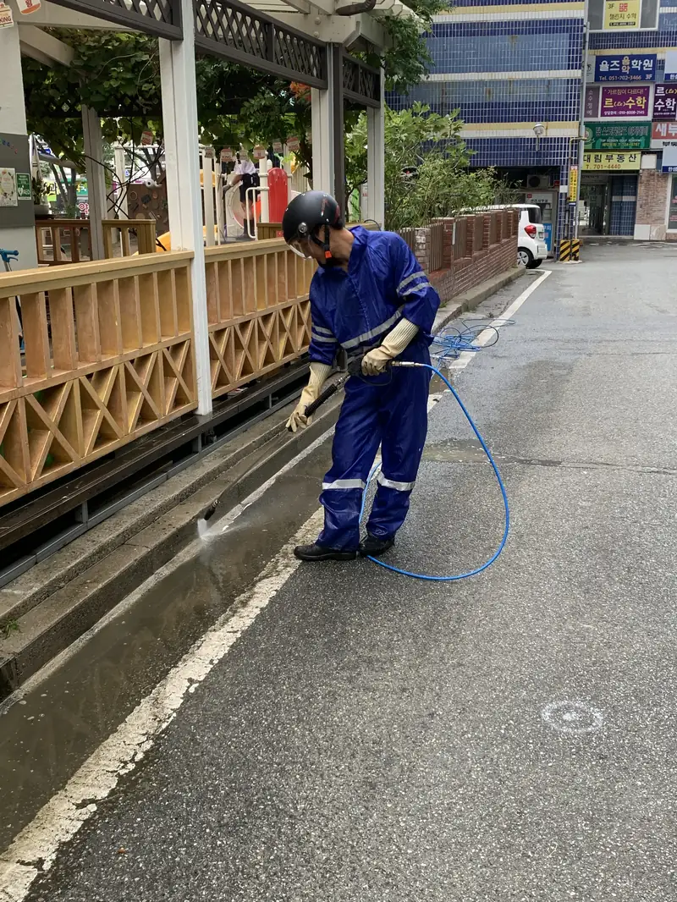

바닥이 미끄럽다는 민원이 들어왔다면 — 이끼 낀 바닥은 넘어짐 사고와 배상 문제로 이어집니다.
파워클린져스의 주력은 야외 고압수 청소입니다. 주차장 놀이터 수영장부터 지붕 옥상 옹벽까지, 엔진식 고압세척 장비와 열수(온수) 장비로 묵은 때를 벗겨냅니다. 경상권 전역의 아파트 단지, 상가, 공공시설, 캠핑장에서 작업하며, 실제 작업 과정은 유튜브 채널에서 영상으로 확인할 수 있습니다.
현장 수도 사용이 기본이며, 수도가 없는 현장은 물탱크를 준비해 진행합니다. 물 사용 조건은 견적에 미리 반영합니다.
놀이터 수영장처럼 아이 손이 닿는 시설은 고압수 위주로 작업하고, 세제를 쓴 경우 충분한 헹굼으로 잔류를 없앱니다.
그늘지고 습한 곳은 1년, 볕이 드는 곳은 2~3년 주기가 보통입니다. 정기 계약으로 관리하면 회당 비용이 줄어듭니다.
엔진식 고압세척기와 열수(온수) 장비, 자일로프 고소작업 장비를 직접 보유하고 있습니다. 실제 장비와 작업 과정은 유튜브 채널 영상으로 확인할 수 있습니다.
가능합니다. 견적서 세금계산서 등 행정 서류를 지원하고, 월 분기 단위 정기 일정으로 운영합니다.